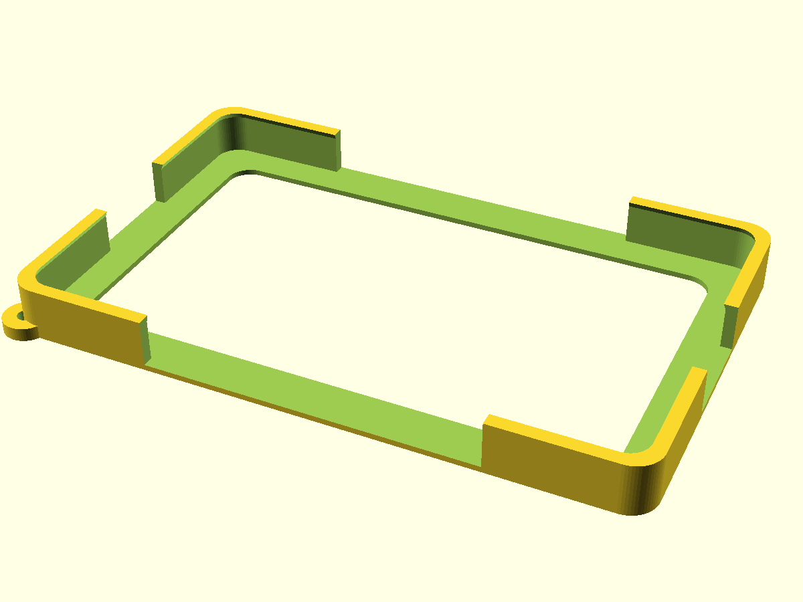
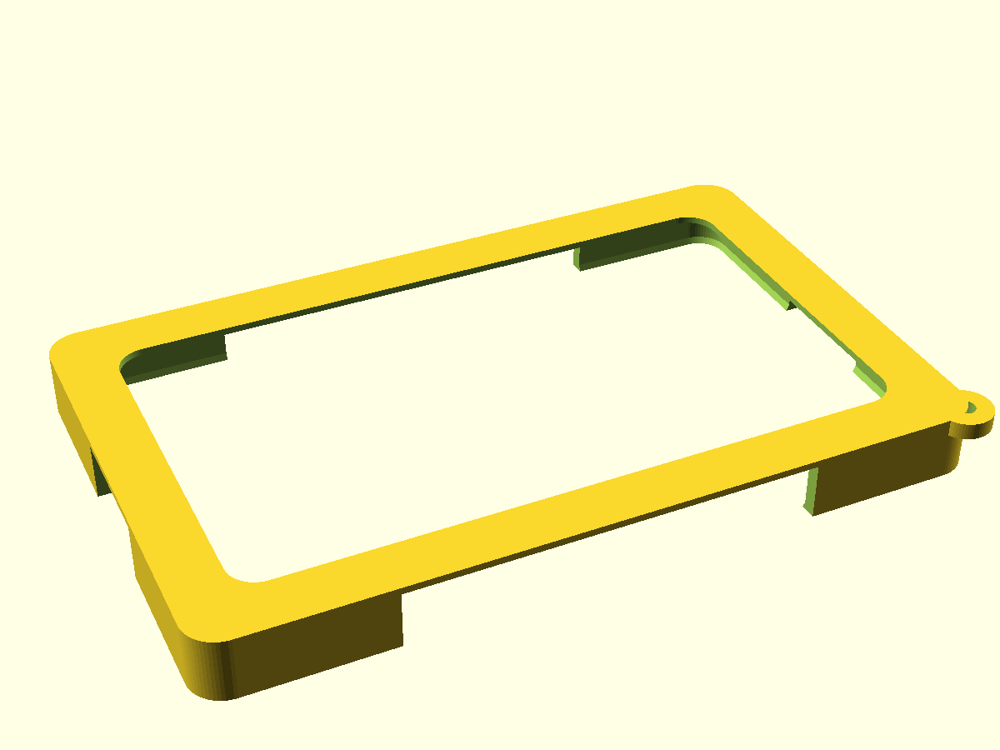

Pocket bumper case·
Provenance
This page is case/README.md included verbatim — the case lane's own
documentation, written next to the .scad source it describes (commit
078dec6). The preview renders are copied alongside; the printable
sticky_case.stl / .3mf and the parametric sticky_case.scad live in
the repo's case/ directory. The design answers the
pocket-carry directive: glass never touches pocket
contents, magnets keep working, and — the part worth copying — nothing
is cut where nothing was measured.
Sticky case family (one parametric source)·
Variants (all from sticky_case.scad, selected via -D variant=..., rendered by ./render.sh):
| variant | status | files |
|---|---|---|
bumper |
✅ print-validated | sticky_case_bumper.stl/.3mf |
wrap |
✅ two-piece complete: shell + snap-on bezel (print plate = both parts) | sticky_case_wrap.stl/.3mf |
dock |
📋 planned (magnet desk stand ~20°) | — |
Corner-bumper case for the Seeed reTerminal Sticky — pocket-first protection per the design directive: the glass never touches pocket contents, the four N52 corner magnets keep working, and nothing is cut where we could not measure.


Design decision — why a corner bumper, not a full shell·
There is no authoritative mechanical source for the Sticky's edge layout:
Seeed-Projects/OSHW-reTerminal-Sticky— 404 (checked 2026-08-26)- GitHub code search for a vendor STEP — no hits
- seeedstudio.com/sticky/docs hardware-overview — dimensions + internals only, no drawing, no button/USB positions
The buttons (AI/Power, Up, Down), the USB-C recovery port, the PDM mic hole and the buzzer port all live on the device's edges at positions we cannot verify. House rule: an unverified cutout is a wrong cutout. So all four edge middles are fully open — every edge feature stays reachable no matter where it actually is, USB-C recovery flashing works in-case, mic and buzzer are never sealed. Only the four corners are wrapped.
The front face is completely unobstructed except a 0.8 mm retention lip at the corners — swipe-from-edge gestures survive because the lip exists only over the corner radii, never along the straight edges.
Dimensions·
| parameter | value | basis |
|---|---|---|
| device body | 106.0 × 65.5 × 7.3 mm | MEASURED (vendor spec, docs/hardware.md) |
| clearance per side | 0.30 mm | brief (0.25–0.3) |
| cavity | 106.6 × 66.1 mm | derived |
| outer envelope | 110.6 × 70.1 × 9.3 mm (+ lanyard ear) | derived |
| wall thickness | 2.0 mm | brief ≥1.6, upsized for pocket duty |
| back rim | 6.0 mm wide × 1.0 mm thick | magnet compromise, see below |
| lip above glass | 1.0 mm | brief |
| lip inward overhang | 0.8 mm (corners only) | retention vs. gesture tradeoff |
| corner wrap length | 26 mm from each corner | leaves ≥45 mm open per edge middle |
| outer corner radius | 5.0 mm | pocket-friendly |
| lanyard hole | ⌀3.0 mm, bottom-left ear | optional cord |
Measured vs. assumed ledger (bench discipline)·
| item | status | detail |
|---|---|---|
| body W×H×T | MEASURED | vendor spec 106 × 65.5 × 7.3, confirmed in our docs |
| body corner radius | ASSUMED = 4.0 mm | eyeballed from product photos; if the real radius differs the corner fit changes — caliper it and adjust body_corner_r |
| button / USB / mic / buzzer edge positions | UNKNOWN — designed around | no STEP, no drawing; all edge middles left open so no cutout can be wrong |
| magnet positions | ASSUMED corner zones | "N52 in all four corners" is spec; exact XY unknown, so the entire back is ≤1 mm or open |
| glass plane flush with body top | ASSUMED | photos show near-flush glass; lip height is measured from body top |
Magnet tradeoff (stated, per brief)·
The back is skeletal: a 6 mm-wide, 1.0 mm-thick rim plus fully open
center. N52 magnets pull usefully through 1 mm of PLA — expect roughly
30–50 % holding-force loss vs. bare metal contact. If wall-mount grip
matters more than back protection, print with back_rim_w smaller or drop
back_t to 0.6 (2–3 layers); if pocket protection matters more, this is
the right default. The corners themselves are where the magnets sit, and
the rim covers them with exactly the 1 mm ceiling the brief allows.
Retention·
Snap-in, no screws: tilt one long edge under the corner lips, press the opposite corners down — the 0.8 mm lips flex over the body and capture the glass perimeter at four points. Removal: push a thumb through the open back.
Validation (strands-cad, 2026-08-26)·
| check | result |
|---|---|
| watertight | ✅ trimesh.is_watertight = True, single solid |
| volume | 5.996 cm³ (stl_volume) |
| mass | 7.44 g PLA / 7.62 g PETG @ 100 % infill (stl_weight) |
printability (stl_printability, X1C) |
fits bed ✅ · 0 % overhang area · bed contact 2653 mm² · supports: no |
inertia (sim_inertia_from_stl) |
COM ≈ (−0.5, −0.3, 3.1) mm — essentially centered |
Honesty note: the brief's sanity band was ~10–25 g; a skeletal corner bumper is simply lighter than that. Chasing the band would mean thickening the back over the magnets or closing the edges — both worse designs. 7.4 g is the honest mass of the right shape.
Print settings (suggested)·
- Orientation: back face down, exactly as the STL sits — flat, no supports
- Material: PETG preferred (lip flexes repeatedly; PLA works, snap gently)
- Layer: 0.16–0.20 mm · Walls: 3 · Infill: irrelevant (part is nearly all wall)
- No brim needed (2653 mm² bed contact); no supports (0 % overhang — the lip's underside is a 45° chamfer by construction)
Files·
sticky_case.scad— parametric source (OpenSCAD); every number above is a variablesticky_case.stl— watertight, validatedsticky_case.3mf— same geometry for the Bambu slicerpreview_front.png/preview_back.png— renders
Rebuild·
Wrap variant (full-wrap 1:1, two-piece)·
Back shell (1.2 mm magnet-honest solid back, 1.6 mm walls, 0.20 mm snug fit)
plus a snap-on front bezel: shoebox-lid skirt wraps the shell outside
(0.15 mm clearance) and clips into four 0.4 mm half-round grooves near the
corners. Window opening 103 × 62.5 mm — the display's active area is
~86.5 × 51.9 mm (800×480 @ 235 ppi), so the 1.5 mm lip stays ≥5 mm clear of
touch-active glass. 45° chamfered window edge. Cased device: 112.3 × 71.8 ×
10.3 mm. Edge windows remain generous ASSUMED parameters (win_bottom/top/
left/right) until a caliper session — tighten there, never guess.
Print: both parts ship on one plate (shell upright, bezel face-down), flat, no supports — snap bumps/grooves are ≤0.5 mm half-rounds, self-supporting. ~18.8 g PLA total.
Pocket refinements (phase 2, flags)·
wrap_guard=true— AI-button guard rails (the P-1 accidental-recording defense in plastic): rounded rails flanking + underlining the right-edge button window, 1.0 mm proud. Pocket fabric bridges on the rails and the bezel skirt (itself 1.35 mm proud = the top rail) instead of pressing the recessed buttons — deflection to reach a button face goes from ~1.6 mm to2.6 mm. Position-independent, so it needs no caliper data. Deliberate press with a fingertip still lands easily.
wrap_lanyard=true— lanyard ear (⌀3 mm hole) on the shell's bottom-left corner, below the skirt line.